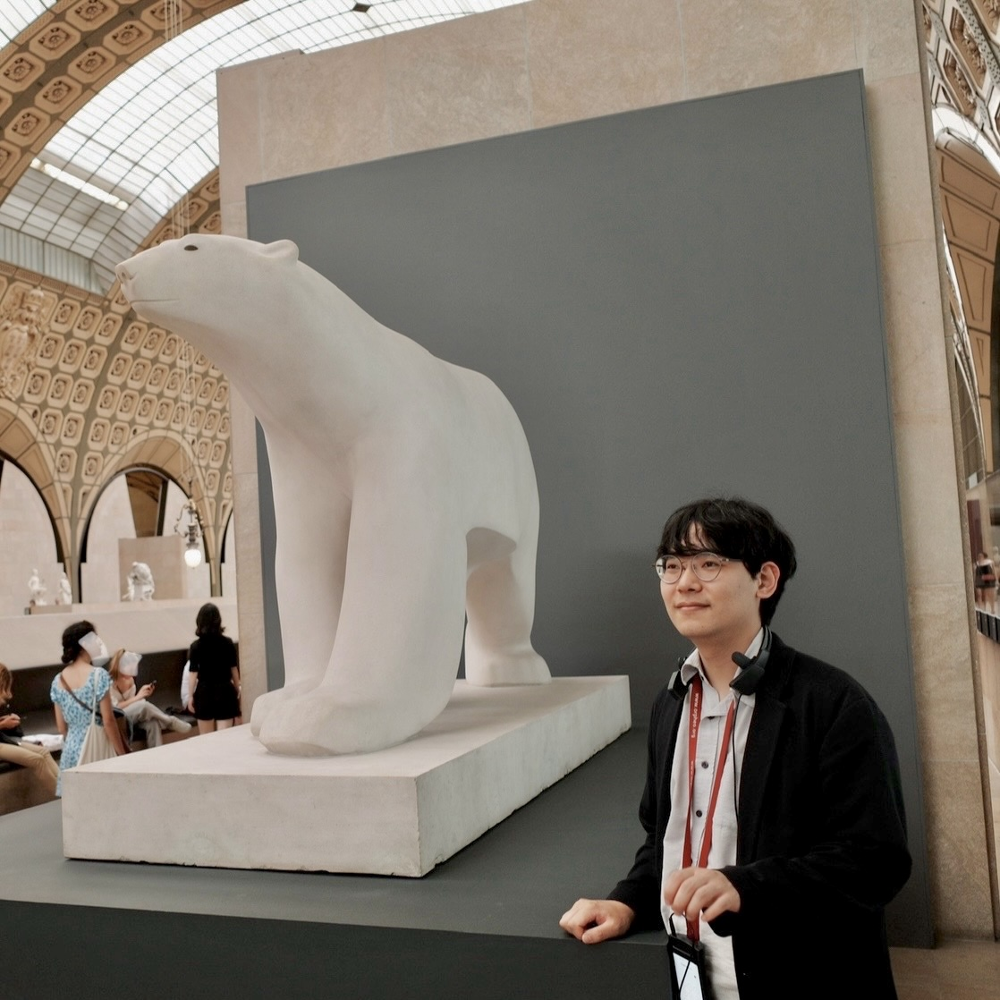

 I am a fourth-year Ph.D. student in mathematics at UC Berkeley working with David Nadler. Here are my contact information and CV.
I received my A.B. in mathematics from Princeton University, where I got advised by János Kollár.
My research interests lie in algebraic geometry, homological algebra and symplectic geometry. I am particularly interested in:
- Geometric information contained in derived categories of coherent sheaves (e.g. Orlov's conjecture on the Rouquier dimension);
- Birational geometry (the minimal model program, DK hypothesis);
- Tensor triangular geometry and studies of thick subcategories in trinagulated categories;
- The homological mirror symmetry, representation of finite dimensional algebras, and their applications to studies of derived categories of coherent sheaves;
- (Noncommutative) derived algebraic geometry.
Ongoing events (Fall 2024)
- I will participate in Derived Categories and Mirror Symmetry
- I will participate in Derived Representation Theory and Triangulated Categories
- I will participate in Workshop on Derived Categories, Noncommutative Geometry and Deformation Theory